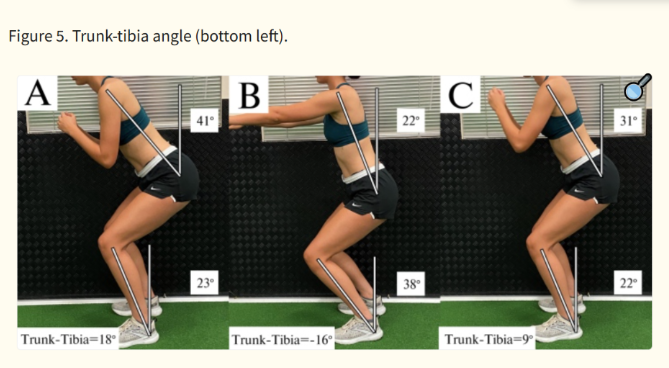

Finding your body
FormFactor uses MediaPipe from Google to find points on your body in every camera frame. It uses your shoulder, hip, knee, and ankle on the side closest to the camera. Everything runs in your browser, so your privacy is protected!
The problem
A lot of high schoolers lift on their own with nobody checking their form. If your chest drops forward too fast when you stand up, your lower back ends up doing the work instead of your legs. A coach would notice, but most teens don't have one.
How to use it
- Set up your laptop or phone so it sees you from the side.
- Click Start, do your reps, then click Stop.
- Watch it back. The lines turn green, yellow, or red, and you get tips on what to fix.
Guide to use
- Red: your chest drops forward really fast.
- Yellow: your hips rise before your chest, or you lean more than 45°.
- Green: none of those happened- good form!
Which muscles worked more: trunk lean minus shin lean at your deepest point. More than +10° means your hips did more work, less than -10° means your knees did, and in between is even.

A. Hip extensor bias with trunk-tibia angle > 10°; (B) Knee extensor bias with trunk-tibia angle < -10°; (C) Neutral bias with -10° ≤ trunk-tibia angle ≤ 10°.
From Straub & Powers (2024), A Biomechanical Review of the Squat Exercise.
Limits
- One camera can't see the curve of your back, only a line from your shoulder to your hip.
- It can't measure force or how much weight you're lifting yet.
- It works best from the side, with your whole body in view and good lighting.
Your video stays on your device
Everything runs in your browser. Nothing gets uploaded or saved.